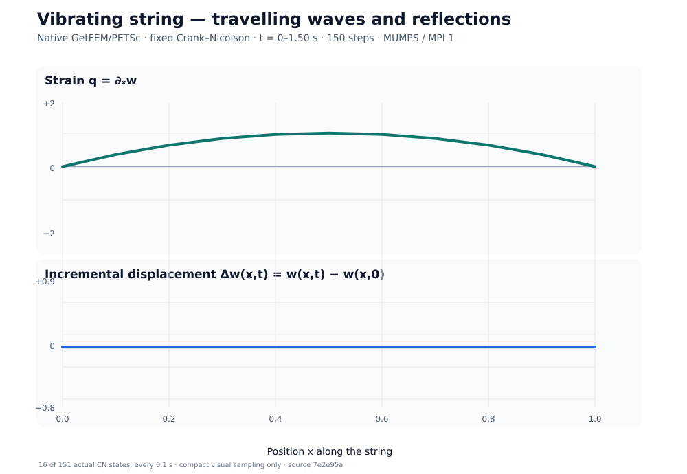
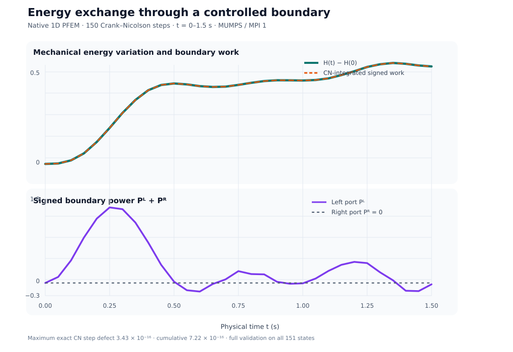
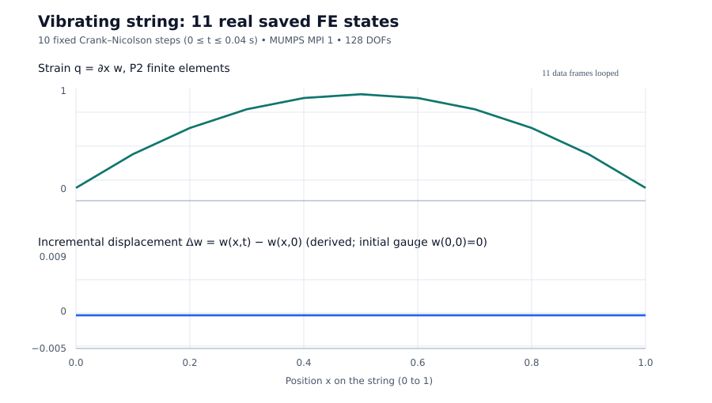
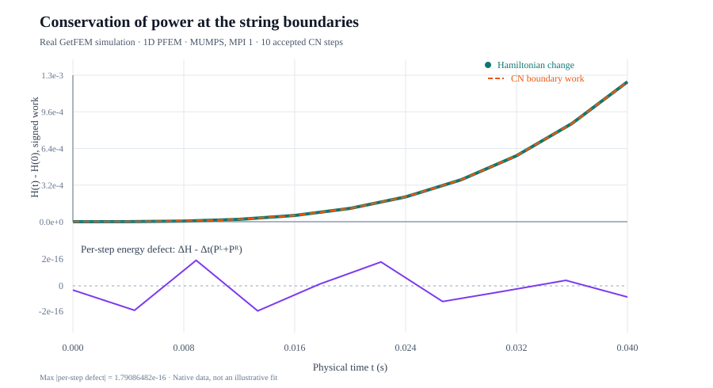

Getting started
Before beginning, use the recommended Docker installation and
open your independent user project in VS Code’s Dev Container (or run
Python inside the Docker image with your project mounted at /work).
For a native Conda alternative, activate the environment in which
SCRIMP is installed (for example conda activate scrimp).
The public v1.3.0 Docker image is planned but not yet published;
see How to install and First SCRIMP project with VS Code (v1.3.0) for the exact release status.
This chapter is both a first lesson and a small installation test. We start from the physical energy and boundary power law, then construct its PFEM discretization and compare numerical solutions using PETSc’s MUMPS, sequential SuperLU and parallel SuperLU_DIST. For a first verification from the source checkout, you can execute:
python -m examples.wave_1d --solver mumps --check
The complete, maintained code is examples/wave_1d.py.
It accepts --mesh-size, --time-step, --final-time,
--plot and --solver; running the tutorial with
--check verifies an actual PETSc time integration and its
discrete mechanical power balance. A successful Python import or
LU factorization alone is not a physical acceptance test.
Native qualification: the same physical configuration was validated on 24 November 2026 with MUMPS MPI 1/2, SuperLU MPI 1, and SuperLU_DIST MPI 1/2. A separate 1.5 s MUMPS demonstration was also qualified for visualisation. These are genuine GetFEM/PETSc tests, not numerical reproductions of the published wave-equation figures.
The incremental Python blocks below use the same identifiers,
expressions and numerical settings as the maintained
wave_1d() function. In the source they are encapsulated
inside that function, while here they are shown one block at
a time for teaching. The optional CLI and evidence export
are implemented by main() in the same file.
Download the complete, qualified Python program to see every step in context.
The source-only regression
tests/test_v130_wave_1d_doc_parity.py compares the
actual Python AST of all the snippets below with
the code executed by wave_1d(). It checks the
same finite elements, GetFEM GWFL bricks, boundary
controls, DAE initialization, PETSc solver/time options
and Hamiltonian; the test runs in CI to prevent a
silent divergence when either file changes.
To understand the coding philosophy of SCRIMP, let us consider the 1D wave equation with Neumann boundary control as a first example
where \(w\) denotes the deflection from the equilibrium position of a string, \(\rho\) is its linear mass density and \(T\) the (possibly heterogeneous) string tension coefficient. Note the minus sign on the control at the left end side, standing for the outward normal to the domain \((0,1)\).
The physics giving this equation has to be restated in the port-Hamiltonian formalism first.
Port-Hamiltonian framework
Let \(\alpha_q := \partial_x w\) denotes the strain and \(\alpha_p := \rho \partial_t w\) the linear momentum. One can express the total mechanical energy lying in the system \(\mathcal{H}\), the Hamiltonian, as
The variables \(\alpha_q\) and \(\alpha_p\) are known as the state variables, or in the present case since \(\mathcal{H}\) represents an energy, the energy variables.
Computing the variational derivative of \(\mathcal{H}\) with respect to these variables leads to the co-state variables, or in our case the co-energy variables, i.e.
that is the stress and the velocity respectively.
Newton’s second law and Schwarz’s lemma give the following dynamics
Of course, trivial substitutions in this system would lead again to the initial string equation in second-order form. However, by keeping the system as is, an important structure appears. Indeed, the matrix of operators above is formally skew-symmetric. In other words, for all test functions \(f_q\) and \(f_p\) (compactly supported \(C^\infty\) functions), one has thanks to integration by parts
Together with the boundary Neumann condition, and defining collocated Dirichlet observations, this defines a (Stokes-) Dirac structure, where solutions along time, i.e. trajectories, will belong.
The port-Hamiltonian system representing a (linear) vibrating string with Neumann boundary control and Dirichlet boundary observation then writes
The two first blocks, giving in particular the dynamics, define the Dirac structure of the system. The third block is known as the constitutive relations, and is needed to ensure uniqueness of solutions.
The importance of the Dirac structure relies, in particular, in the fact that it encloses the power balance satisfied by the Hamiltonian. Indeed, along the trajectories, one has
In other words, the Dirac structure encodes the way the system communicates with its environment. In the present example, it says that the variation of the total mechanical energy is given by the power supplied to the system at the boundaries.
Each couple \((\partial_t \alpha_q, e_q)\), \((\partial_t \alpha_p, e_p)\), \((u_L, y_L)\) and \((u_R, y_R)\) is a port of the port-Hamiltonian system, and is associated to a physically meaningful term in the power balance.
Structure-preserving discretization
The objective of a structure-preserving discretization method is to obtain a finite-dimensional Dirac structure that encloses a discrete version of the power balance. There is several ways to achieve this goal, but SCRIMP focuses on a particular application of the Mixed Finite Element Mehod, called the Partitioned Finite Element Method.
Remark: The 1D case does simplify the difficulties coming from the boundary terms. Indeed, here the functional spaces for the controls \(u_L\), \(u_R\) and the observations \(y_L\), \(y_R\) are nothing but \(\mathbb{R}\).
Let \(\varphi_q\) and \(\varphi_p\) be smooth test functions, and \(\delta_{mx}\) denote the Kronecker symbol. One can write the weak formulation of the Dirac Structure as follows
Integrating by parts the second line make the controls appear
Now, let \((\varphi_q^i)_{1 \le i \le N_q}\) and \((\varphi_p^k)_{1 \le k \le N_p}\) be two finite families of approximations for the \(q\)-type port and the \(p\)-type port respectively, typically finite element families, and write the discrete weak formulation with those families, one has for all \(1 \le i \le N_q\) and all \(1 \le k \le N_p\)
which rewrites in matrix form
where \(\underline{\alpha_\star}(t) := \begin{pmatrix} \alpha_\star^1(t) & \cdots & \alpha_\star^{N_\star} \end{pmatrix}^\top\), \(\underline{e_\star}(t) := \begin{pmatrix} e_\star^1(t) & \cdots & e_\star^{N_\star} \end{pmatrix}^\top\), and
Abusing the language, the left-hand side will be called the flow of the Dirac structure in SCRIMP, while the right-hand side will be called the effort.
Now one can approximate the constitutive relations in those families by projection of their weak formulations
from which one can deduce the matrix form of the discrete weak formulation of the constitutive relation
where
Finally, the discrete Hamiltonian \(\mathcal{H}^d\) is defined as the evaluation of \(\mathcal{H}\) on the approximation of the state variables
The discrete power balance is then easily deduced from the above matrix formulations, thanks to the symmetry of \(M\) and the skew-symmetry of \(J\)
Remark: The discrete system that has to be solved numerically is a Differential Algebraic Equation (DAE). There exists some case (as in this example), where one can write the co-state formulation of the system by substituting the constitutive relations at the continuous level to get a more classical Ordinary Differential Equation (ODE)
where this time the mass matrices on the left-hand side are both weighted with respect to the physical parameters
Choosing distributed or global scalar ports
For a field depending on space and time, SCRIMP uses an appropriate
finite-element space on the computational mesh, through
DPHS.add_FEM(S.FEM(...)).
For a single scalar degree of freedom, such as the displacement or momentum of a mechanical oscillator, use a global port instead:
import scrimp as S
oscillator = S.DPHS("real")
oscillator.set_domain(S.Domain("Interval", {"L": 1.0, "h": 1.0}))
q = S.State("q", "Displacement", "lumped")
oscillator.add_state(q)
oscillator.add_costate(S.CoState("e_q", "Spring force", q))
oscillator.add_lumped_port("q")
The reference domain is only used for weak-form assembly in this finite-dimensional example. It is not a spatial approximation of the oscillator. See Finite-dimensional port-Hamiltonian systems for the corresponding algebraic variables and mixed PDE–ODE problems; see also Mass–spring–damper and Nonlinear pendulum.
Coding within SCRIMP
The maintained tutorial lives in examples/wave_1d.py.
It replaces the former exploratory 1D sandbox script, which was
removed after the genuine five-solver native acceptance succeeded.
The snippets below follow the maintained version; its function
wave_1d() exposes mesh/time resolution, LU backend and plotting.
To start, import SCRIMP and create a distributed port-Hamiltonian
system (DPHS) called system, as in wave_1d()
import scrimp as S
system = S.DPHS("real")
Then, define the domain \(\Omega = (0,1)\), with a mesh-size parameter \(h\), and add it to the DPHS
mesh_size = 0.05
system.set_domain(S.Domain("Interval", {"L": 1., "h": mesh_size}))
This creates a mesh of the interval \(\Omega = (0,1)\).
Important to keep in mind: the domain is composed of regions,
denoted by integers. The built-in geometry of an interval available in
the code returns 1 for the domain \(\Omega\), 10 for the left-end
and 11 for the right-end. Informations about available geometries and
the indices of their regions can be found in the documentation or via
the function built_in_geometries() available in
scrimp.utils.mesh.
On this domain, we define two states and add them to the DPHS
q = S.State("q", "Strain", "scalar-field")
p = S.State("p", "Linear momentum", "scalar-field")
system.add_state(q)
system.add_state(p)
and the two associated co-states
system.add_costate(S.CoState("e_q", "Stress", q))
system.add_costate(S.CoState("e_p", "Velocity", p))
These latter calls create automatically two non-algebraic ports,
named after their respective state. Their names q and
p correspond to the variables \alpha_q and
\alpha_p in the mathematical development above.
Finally, we create and add the two control-observation ports with
for side, region, suffix in (("left", 10, "L"), ("right", 11, "R")):
system.add_control_port(S.Control_Port(
f"Boundary control ({side})", f"U_{suffix}",
"Outward traction", f"Y_{suffix}", "Velocity",
"scalar-field", region=region,
))
Note the crucial keyword region to restrict each port to its end.
By default, it would apply everywhere.
Syntaxic note: although \(y\) is the observation in the theory
of port-Hamiltonian systems, it is also the second space variable for
N-D problems. This name is thus reserved for this latter aim and
forbidden in all definitions of a DPHS. Nevertheless, the code being
case-sensitive, it is possible to name the observation Y. To avoid
mistakes, we take the habit to always use this syntax, this is why we
denoted our controls and observations with capital letters even if the
problem does not occur in this 1D example.
To be able to write the discrete weak formulation of the system, one need to set four finite element families, associated to each port. Only two arguments are mandatory: the name of the port and the degree of the approximations.
for finite_element in (
S.FEM("q", 2), S.FEM("p", 1),
S.FEM("Boundary control (left)", 1),
S.FEM("Boundary control (right)", 1),
):
system.add_FEM(finite_element)
This will construct a family of Lagrange finite elements (default choice) for each port, with the prescribed order. Remember that the boundary is only 2 disconnected points in this 1D case, so the only possibility for the finite element is 1 degree of freedom on each of them: Lagrange elements of order 1 is the easy way to do that.
The loop constructs and immediately registers all four finite-element
spaces with system.add_FEM(). The spatial fields are
approximated by P2 (q) and P1 (p),
while each endpoint control has its own boundary space.
Finally, the physical parameters of the experiment have to be defined. In SCRIMP, a parameter is associated to a port.
system.add_parameter(S.Parameter(
"T", "String tension", "scalar-field", "1", "q",
))
system.add_parameter(S.Parameter(
"rho", "Linear mass density", "scalar-field", "1+x*(1-x)", "p",
))
The first argument will be the string that can be used in forms, the second argument is a human-readable description, the third one set the kind of the parameter, the fourth one is the mathematical expression defining the parameter, and finally the fifth argument is the name of the associated port.
It is now possible to write the weak forms defining the system. Only the non-zero blocks are mandatory. Furthermore, the place of the block is automatically determined by GetFEM. The syntax follow a simple rule:
Important
Weak-form and macro strings use GetFEM’s GWFL syntax, not Python/NumPy syntax. In particular, nested explicit GWFL matrices list columns, not rows. This can reverse a rotation or boundary control without causing an assembly error. Read GetFEM GWFL matrix notation in Python for an illustrated example and a link to the official GetFEM manual.
the unknown trial function q is automatically associated to the test
function Test_q (note the capital T on Test), and so on.
Like we did for each call, the first step is to create the object, then to add it to the DPHS. As there is a lot of bricks, let us make a loop using a python list
bricks = [
# Time-derivative mass matrix M.
S.Brick("M_q", "q*Test_q", [1], dt=True, position="flow"),
S.Brick("M_p", "p*Test_p", [1], dt=True, position="flow"),
# Flow-side boundary entries are -y, not +y.
S.Brick("-M_Y_L", "-Y_L*Test_Y_L", [10], position="flow"),
S.Brick("-M_Y_R", "-Y_R*Test_Y_R", [11], position="flow"),
# Antisymmetric Dirac interconnection and outward traction.
S.Brick("D", "Grad(e_p)*Test_q", [1], position="effort"),
S.Brick("-D^T", "-e_q*Grad(Test_p)", [1], position="effort"),
S.Brick("B_L", "U_L*Test_p", [10], position="effort"),
S.Brick("B_R", "U_R*Test_p", [11], position="effort"),
S.Brick("-B_L^T", "-e_p*Test_Y_L", [10], position="effort"),
S.Brick("-B_R^T", "-e_p*Test_Y_R", [11], position="effort"),
# Linear constitutive laws, implicit zero-residual form.
S.Brick("-M_e_q", "-e_q*Test_e_q", [1]),
S.Brick("CR_q", "q*T*Test_e_q", [1]),
S.Brick("-M_e_p", "-e_p*Test_e_p", [1]),
S.Brick("CR_p", "p/rho*Test_e_p", [1]),
]
for brick in bricks:
system.add_brick(brick)
The first argument of a brick is a human-readable name, the second one
is the form, the third is a list (hence the [ and ]) of integers,
listing all the regions where the form applies. The optional parameter
dt=True is to inform SCRIMP that this block matrix will apply on
the time-derivative of the unknown trial function, and finally the
option parameter position="flow" informs SCRIMP that this block
is a part of the flow side of the Dirac structure,
position="effort" do the same for the effort side, and without
this keyword, SCRIMP places the brick as part of the constitutive
relations.
Syntaxic note: the constitutive relations have to be written under an implicit formulation \(F = 0\). Keep in mind that a minus sign will often appear because of that.
The port-Hamiltonian system is now fully stated. It remains to set the controls and the initial values of the states before solving
system.set_control("Boundary control (left)", "sin(2*pi*t)")
system.set_control("Boundary control (right)", "0.")
system.set_initial_value("q", "4*x*(1-x)")
system.set_initial_value("p", "0.")
At t=0, both boundary tractions are zero. The initial
strain is the exact quadratic 4*x*(1-x): it vanishes at
both endpoints and belongs exactly to the P2 finite-element
space selected for q. This makes the prescribed differential
initial data compatible with the zero boundary tractions, with no
uncontrolled boundary projection error. It excites a nontrivial
interior wave.
For the reproducible tutorial we use fixed Crank–Nicolson steps and the strict algebraic DAE initializer. A brief, non-graphical installation test needs only a short physical time interval:
final_time = 0.04
time_step = 0.004
factor_solver = None # Default MUMPS; other options via --solver
options = {}
if factor_solver is not None:
options["pc_factor_mat_solver_type"] = factor_solver
system.set_time_scheme(
init_step_ts_type="algebraic", init_step=True,
ts_type="cn", ts_adapt_type="none",
ts_exact_final_time="matchstep",
ksp_type="gmres", pc_type="lu",
t_0=0., t_f=final_time, dt=time_step, dt_save=time_step,
**options,
)
system.solve()
PETSc’s default direct factorization backend is MUMPS; select SuperLU for serial operation only, or SuperLU_DIST in MPI:
python -m examples.wave_1d --solver mumps --check
python -m examples.wave_1d --solver superlu --check
python -m examples.wave_1d --solver superlu_dist --check
mpiexec -n 2 python -m examples.wave_1d --solver mumps --check
mpiexec -n 2 python -m examples.wave_1d --solver superlu_dist --check
Never use ``superlu`` with more than one MPI rank. These commands validate different numerical backends on the same physical model; they are not benchmarks of their speed or evidence of universal backend support on an arbitrary machine.
To end, one can also add the Hamiltonian terms and plot the contribution of each port to the balance equation
system.hamiltonian.set_name("Mechanical energy of a vibrating string")
for term in (
S.Term("Potential energy", "0.5*q*T*q", [1]),
S.Term("Kinetic energy", "0.5*p*p/rho", [1]),
):
system.hamiltonian.add_term(term)
# Optional, corresponding to --plot on the command line:
plot = False
if plot:
system.plot_Hamiltonian(
with_powers=True, save_figure=True,
filename="wave_1d_energy_and_power.png",
)
This matches the actual wave_1d() function: by default it
returns the solved system without plotting, and the CLI flag
--plot activates the saved figure. Energy terms are registered
after the time integration but before evaluating the Hamiltonian.
The script performs the check explicitly from the accepted FE
trajectory and the two signed boundary port powers. For the
Crank–Nicolson implementation, power sample P[k] with
k>=1 is associated with the step ending at ``t[k]``
and is evaluated on the mean FE state. Thus the correct discrete
boundary work is
The initial sample P[0] is instantaneous; it must not
be included in an endpoint trapezoidal quadrature over CN step
powers. The physical check examines every accepted step:
This sign convention corresponds to the outward Neumann controls
U_L=-e_q(0), U_R=e_q(1) and the actual port
observations Y_L=e_p(0), Y_R=e_p(1).
In the SCRIMP flow equations the observation appears as -Y,
hence the negative flow-side boundary mass rows.
The first short tutorial is not a substitute for a time/mesh
refinement study or the original published wave analysis.
For a structure-preserving discretization, the corresponding energy balance should remain constant. The old pre-v1.3.0 plot is intentionally not reproduced here, because it was produced with a different boundary-sign and time-integration convention. The new visualization is generated directly from the maintained model with:
python -m examples.wave_1d --solver mumps --check --plot
The genuine five-solver native installation gate passed on 24 November
2026 at source commit 2a170c8: MUMPS MPI 1/2, SuperLU MPI 1,
SuperLU_DIST MPI 1/2, eleven accepted snapshots each, full 128-DOF
trajectories agreeing to round-off, and per-step CN energy defects below
\(1.8\times 10^{-16}\). All ten original GetFEM VTK time-series
outputs (q and p for five solver/MPI combinations) were
included in the reproducible native archive. This is a short physical
installation smoke, not a long-time wave propagation benchmark.
The longer, separately qualified documentation simulation now
runs for \(1.5\) seconds (150 accepted CN steps), enabling an
actual visual study of wave propagation, reflection and the
effect of the left boundary traction. Its real MUMPS/MPI1
evidence is v130-wave1d-long-doc-7e2e95a4-75oCWG1T.zip
(source 7e2e95a, pinned image
scrimp-mpi:v1.3.0-rc3).
All 151 accepted FE states and their q/p
ParaView time series are available in the archive.
The longest per-step signed CN energy-balance residual is
\(3.44\times 10^{-16}\), and the largest cumulative
residual is below \(7.3\times 10^{-16}\).
The strict DAE projection has an initial final
algebraic residual below \(2.5\times 10^{-17}\).
These are measurements, not visual-fit metrics.


Long native simulation, 1.5 s: finite-element strain \(q=\partial_x w\) and reconstructed incremental displacement \(w(x,t)-w(x,0)\). For a lightweight browser animation, this SVG displays 16 actual snapshots (every tenth accepted state), with 11 display points along the string; the complete 151-frame GIF and all 41 native P2 visualization values are reproducible from the archive. No extra dynamics or interpolation in time is implied by the animated SVG.


Long-time physical power balance: the change in Hamiltonian follows the signed work at the controlled boundary to roundoff; the second panel shows the non-trivial left port power and the identically zero right port power. The complete 150-step numerical residual is checked from original GetFEM/PETSc data, not the subsampled SVG curves.
For comparison, the following figures come from the much shorter five-solver installation acceptance (\(t_f=0.04\) s, ten CN steps). They help distinguish a software installation check from an illustrative physical simulation.


Native-data animation (11 accepted CN frames). The upper curve is the genuine finite-element strain \(q\). The lower curve is the incremental displacement \(w(x,t)-w(x,0)\), reconstructed from the original quadratic strain and left boundary velocity (with initial gauge \(w(0,0)=0\)). This is an animated SVG for the online documentation; no displacement variable was silently substituted into the pH model.


Actual power balance, not a theoretical drawing: \(\mathcal{H}^d(t)-\mathcal{H}^d(0)\) and the integrated signed boundary work coincide to machine precision. The lower panel shows the ten individual CN residuals.
For a valid run, the corrected numerical balance corresponds to
This example illustrates the same port-Hamiltonian/PFEM framework analyzed for heterogeneous boundary-controlled wave equations in Haine, Matignon and Serhani, Numerical Analysis of a Structure-Preserving Space-Discretization for an Anisotropic and Heterogeneous Boundary Controlled N-Dimensional Wave Equation As a Port-Hamiltonian System (2023), and the SCRIMP software framework of Ferraro, Fournié and Haine (2024). The numerical choices used here are deliberately shorter and simpler for teaching; do not interpret this tutorial as a reproduction of the paper’s figures or convergence results.
To retain numerical evidence and ParaView files without writing to the checkout, provide an output directory:
python -m examples.wave_1d --solver mumps --check \
--export --output outputs/my_first_wave
This directory contains accepted full FE trajectories, per-rank
machine-readable reports and q/p VTK time series.
In parallel the ranks may compute concurrently, but SCRIMP
writes a single shared ParaView series only if the complete
FE states and meshes are confirmed identical on every rank.
See How to install for the actual available PETSc backends.
Working with simulation outputs
SCRIMP also provides reproducible post-processing of the original
GetFEM/PETSc output, independent of the solver. The following
utility reads the full accepted FE states, signed port powers,
q and p VTU/PVD time series from a previously
qualified native acceptance archive. It produces:
wave_1d_field_profiles.png/.svg— spatial snapshots of strain \(q\), velocity \(p/\rho\) and reconstructed displacement \(w\);wave_1d_spacetime.png/.svg— space-time diagrams of all three quantities;wave_1d_energy_balance.png/.svg— Hamiltonian change, signed boundary work, each physical port power and residual error;wave_1d_solver_parity.png/.svg— numerical comparison among the five genuinely qualified LU/MPI configurations;wave_1d_string.gif— an actual short animated string, suitable for the online documentation and presentations;wave_1d_energy_and_ports.csv,wave_1d_fields.csv,wave_1d_postprocessed.npzandprovenance.json— user-readable data, machine-readable fields and scientific provenance for independent analysis.
Once the acceptance script
scripts/run-v130-first-wave-1d-acceptance.sh has produced
its ZIP under sandbox/outputs/, render the figures in a
directory owned by the user:
wave1d_zip="$(ls -t sandbox/outputs/v130-first-tutorial-wave1d-*.zip | head -n 1)"
python scripts/render-v130-wave1d-doc.py \
--input "$wave1d_zip" \
--output outputs/figures-wave1d
The shell variable points to the most recent qualified five-backend wave-1D archive in your workspace. The figures require Matplotlib; the GIF additionally requires Pillow. The native simulation does not need to run again for this post-processing.
You can also use ParaView directly: open
outputs/my_first_wave/pv/q/q.pvd or
outputs/my_first_wave/pv/p/p.pvd, enable
the timeline toolbar and play the saved frames. The original
finite-element strain q has 41 visualization points (P2),
and the original momentum p has 21 (P1), with 20
spatial cells in both cases. If you want a velocity rather
than momentum, divide the latter by
\(\rho(x)=1+x(1-x)\); this is precisely how the
renderer obtains \(v=p/\rho\).
A CSV table makes it straightforward to replot the physical power balance independently without SCRIMP, GetFEM, or ParaView:
import numpy as np
import matplotlib.pyplot as plt
# CSV generated by scripts/render-v130-wave1d-doc.py.
data = np.genfromtxt(
"outputs/figures-wave1d/wave_1d_energy_and_ports.csv",
delimiter=",", names=True,
)
plt.plot(data["time_s"], data["H_minus_H0"],
label="Mechanical energy variation")
plt.plot(data["time_s"], data["signed_boundary_work"], "--",
label="Integrated physical boundary work")
plt.xlabel("Time (s)")
plt.ylabel("Energy (J, in consistent model units)")
plt.legend()
plt.grid()
plt.savefig("wave_1d_my_energy_balance.png", dpi=160)
The original full accepted state vectors are in
rank0.npz in the native evidence, while
wave_1d_postprocessed.npz holds the plotted
spatial arrays, the original Hamiltonian and both
signed port-power histories. To inspect the visualization
arrays in a Python notebook:
import numpy as np
with np.load("outputs/figures-wave1d/wave_1d_postprocessed.npz") as data:
t = data["t"] # 11 saved instants
x = data["xq"] # 41 P2 visualization points
q = data["q"] # original strain q(x,t)
v = data["velocity"] # derived v = p/rho
w = data["w"] # reconstructed, gauge w(0,0)=0
The derived fields should be described as such when reusing the figures in reports or articles. The exact power balance is checked with the original GetFEM Hamiltonian/port-power arrays, not with these derived Float32 visualization points.
The short installation test lasts only 0.04 s, so its animation necessarily shows only the beginning of a wave. The separate, now natively qualified long documentation demonstration is available for illustrating propagation more clearly, without rerunning or modifying the five-solver installation acceptance:
SCRIMP_DOCKER_NO_SUDO=1 \
SCRIMP_V130_DAE_IMAGE=scrimp-mpi:v1.3.0-rc3 \
bash scripts/run-v130-wave1d-long-doc-demo.sh
This MUMPS MPI 1 demonstration simulates 150 fixed CN steps over 1.5 s, exports the actual 151 FE snapshots and renders PNG/SVG/GIF/CSV data in an isolated user-owned output directory. It has passed the native physical gates, and its animation, snapshots and energy plots have been reviewed. The online figures above are derived from those accepted numerical results. The longer demonstration is optional and is not part of the five-solver installation smoke.
The derived displacement requires an explicit convention: \(q=\partial_x w\) determines only a spatial difference. The postprocessor first integrates the piecewise quadratic FE strain exactly, then reconstructs the unknown left-end translation using the accepted left boundary velocity and trapezoidal time quadrature, fixing \(w(0,0)=0\). This is an interpretation/visualisation of the computed state; it must not be confused with a separately solved displacement unknown, nor used instead of the original GetFEM energy audit.
And now? It is time to see more examples.